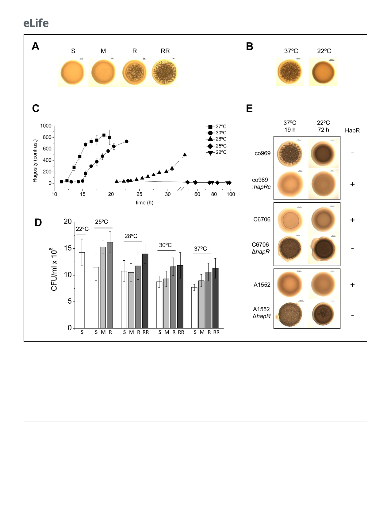

Research article
Microbiology and Infectious Disease
Figure 1. Development of Vibrio cholerae co969 colony rugosity is temperature- and HapR-dependent. (A) Representative images of different V.
cholerae co969 colony rugosities at 37˚C: S (smooth), M (transition between smooth and rugose), R (rugose), and RR (very rugose). (B) Representative V.
cholerae co969 colony morphologies at 37˚C and 22˚C, after incubation during 14 and 24 hr, respectively. (C) Development of V. cholerae co969 colony
rugosity over time at different temperatures. Rugosity is represented as contrast calculated using ImageJ software (see Materials and methods section).
Colonies grown at 22˚C remained smooth despite the incubation time. (D) Colony-forming units (CFUs) of collected colonies grown at different
temperatures and different rugosity stages: S (smooth), M (transition between smooth and rugose), R (rugose), and RR (very rugose). Values are the
average of at least three independent experiments with at least three biological replicates each. Error bars, standard deviation. For 22˚C, values are
from smooth colonies after 48 hr incubation. (E) Colony morphology at 37˚C and 22˚C of co969, co969:hapRc (co969 strain carrying the active variant of
hapR from C6706, hapRc), and C6706 and A1552 and their respective DhapR-mutant derivatives. The incubation times at different temperatures were
previously optimized to result in colonies with a comparable number of CFU per colony.
observed that, similarly to co969, other V. cholerae WT strains with inactive HapR variants also
exhibited temperature-dependent rugosity in both solid–air (i.e. colony morphology) and air–liquid
interfaces (i.e. wrinkled pellicles; Supplementary file 1 – Supplementary Figure 1). However, we did
not observe this phenotype in HapR-sufficient V. cholerae strains, such as C6706 and A1552
3 of 23